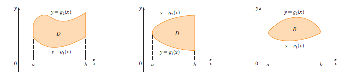

A plane region \(D\) is said to be of type I if it lies between the graphs of two continuous functions of \(x\), that is, \[ D = \{(x, y) | a \le x \le b, g_1(x) \le y \le g_2(x)\} \] where \(g_1\) and \(g_2\) are continuous on \([a, b]\). Some examples of type I regions are shown in Figure below.

In order to evaluate \(\iint_D f(x, y) dA\) when \(D\) is a region of type I, we choose a rectangle \(R = [a, b] \times [c, d]\) that contains \(D\), as in Figure 6, and we let \(F\) be the function given by Equation 1; that is, \(F\) agrees with \(f\) on \(D\) and \(F\) is 0 outside \(D\). Then, by Fubini’s Theorem, \[ \iint_D f(x, y) dA = \iint_R F(x, y) dA = \int_a^b \int_c^d F(x, y) dy dx \] Observe that \(F(x, y) = 0\) if \(y < g_1(x)\) or \(y > g_2(x)\) because \((x, y)\) then lies outside \(D\). Therefore \[ \int_c^d F(x, y) dy = \int_{g_1(x)}^{g_2(x)} F(x, y) dy = \int_{g_1(x)}^{g_2(x)} f(x, y) dy \] because \(F(x, y) = f(x, y)\) when \(g_1(x) \le y \le g_2(x)\). Thus we have the following formula that enables us to evaluate the double integral as an iterated integral.
If f is continuous on a type I region \(D\) such that
\[ D = \{(x, y) | a \le x \le b, g_1(x) \le y \le g_2(x)\}, \] then \[ \iint_D f(x, y) dA = \int_a^b \int_{g_1(x)}^{g_2(x)} f(x, y) dy dx \tag{3} \] The integral on the right side of (3) is an iterated integral that is similar to the ones we considered in the preceding section, except that in the inner integral we regard \(x\) as being constant not only in \(f(x, y)\) but also in the limits of integration, \(g_1(x)\) and \(g_2(x)\).